Progetto cantiere
Progetto per il corso di Computer Graphics
Realizzato da Luca Landolfi Studente di Ingegneria Informatica Magistrale
Il progetto "Cantiere" vuole rappresentare una città ancora in fase di costruzione dove vi sono tre zone ben distinte che riproducono i lavori in corso. L'idea è nata del tutto a caso dopo aver visto un documentario
riguardante la costruzione della città di Dubai.
All'interno del progetto vi è la presenza di vari elementi:
- Un cubo rappresentante la città (visibile dall'interno)
- Alcuni edifici in fase di costruzione
- Alcuni palazzi
- Il palazzo della ditta di costruzioni
- Un elmetto da cantiere (oggetto animato)

E' possibile interagire con la scena in vari modi:
Con l'utilizzo di mouse: muovendo il mouse orizzontalmente si può ruotare l'elmetto, mentre in verticale è possibile farlo spostare in avanti e in dietro. Dando un effetto movimento molto fluido
Con la tastiera, con la quale si possono effettuare molteplici azioni:
La prima, più semplice, è di muovere l'elmetto. Con "freccia sù" e "freccia giù" si muoverà in avanti e in dietro e con le frecce laterali effettuerà una rotazione. Così da poter esplorare tutta la mappa
La seconda riguarda il setting di varie visuali della camera. Abbiamo 3 visuali accessibili dai tasti "I", "O" e "P" (Di seguito alcuni screen delle visuali). Con il tasto "spazio" è inoltre possibile tornare alla visualizzaizone ravvicinata dell'elemetto.
Inoltre con i tasti "." e "," è possibile modificare il "Fov" (Field Of View). Aumentandolo e diminuendolo.
 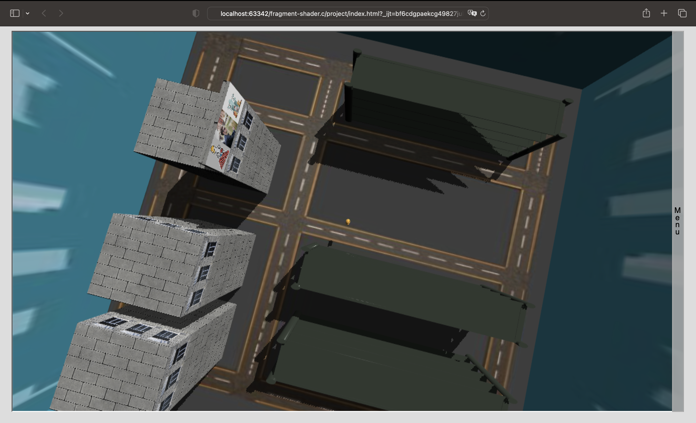
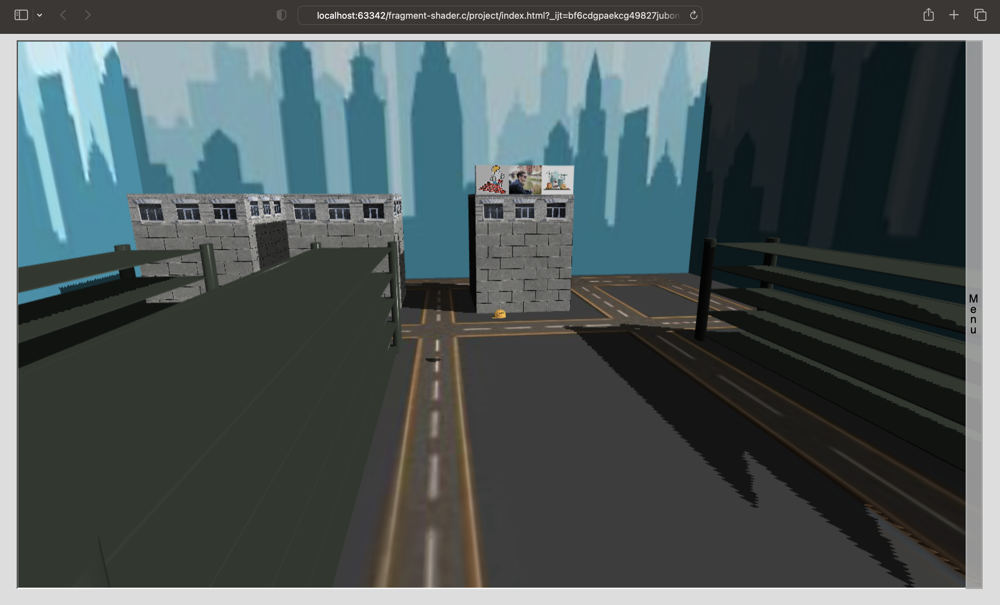
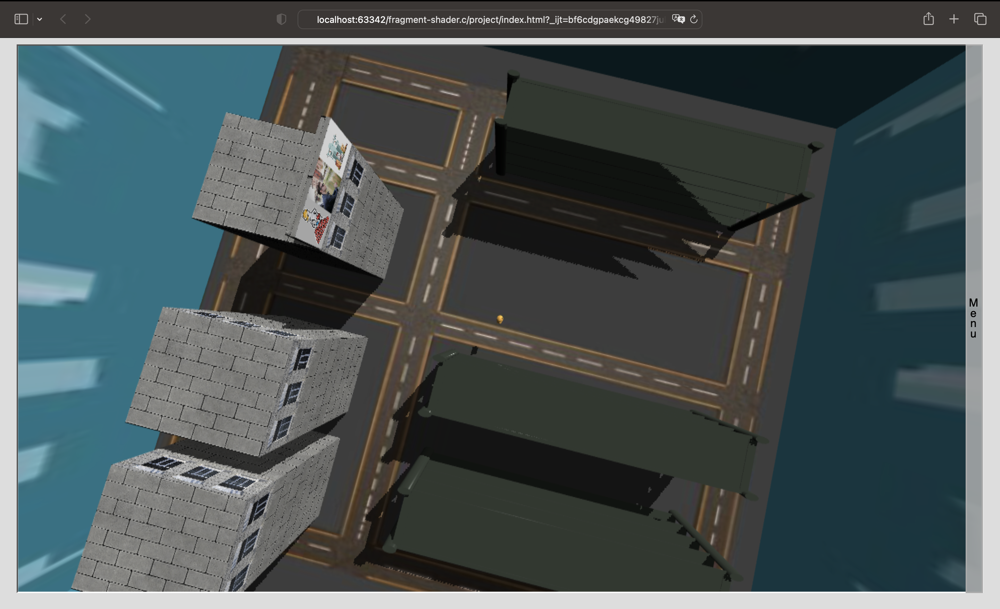
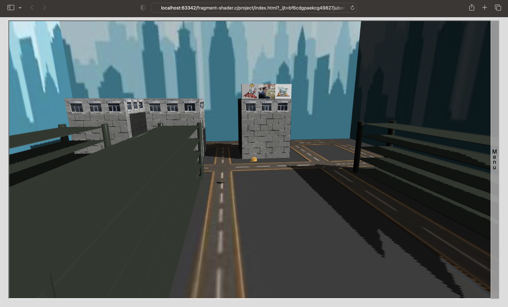

Ultima possibile interazione è quella di poter inserire nella scena ulteriori oggetti3D utilizzando i tasti "Z" e "X".
Alla pressione di uno di questi tasti verrà caricato un Obj (diverso per ogni tasto) all'interno della mappa dove si trova il nostro elmetto


L'utente può poi interagire con tutti glie elementi delle scena tramite un pannello di controllo inserito. Il pannello si apre cliccando sulla barra "menu" situata a destra del canvas.
Cliccandovi si aprirà un menù a tendina dalla quale sarà poi possibile modificare e selezionare tutte le opzioni


Inoltre è stata gestita anche l'interazione "touch" dell'utente in caso di dispositivi mobili. Le gesture inserite sono semplificate, infatti sarà solamente possibile muoversi nella mappa e utitlizzare il menu.
Per muoversi nella mappa le gesture "touch" seguiranno gli comportamenti descritti prima con il mouse
 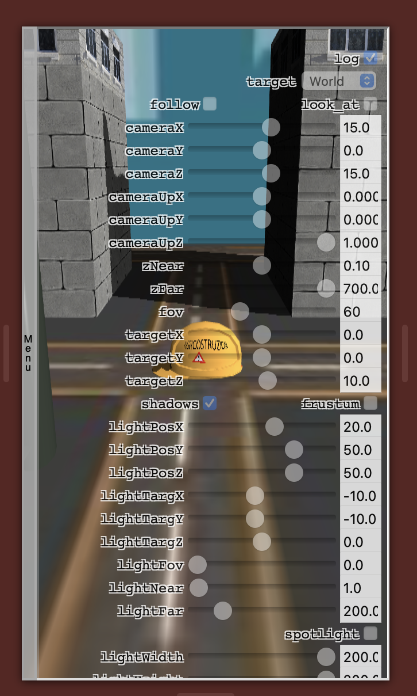
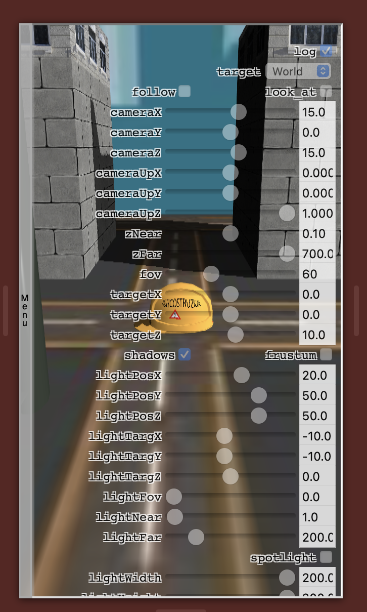
Il progetto prevede quindi un esplorazione della mappa che rappresenta un cantiere in costruzione e il avanzamento, con l'inserimento di palazzi, oggetti e nuovi elementi all'interno della scena.
Sarà quindi possibile muovere l'elmetto da cantiere in modo da poter andare
in giro per i cantieri potendo così supervisionare i lavori, e aggiungere elementi alla scena
La scena necessita di circa un secondo per essere renderizzata la prima volta, in quanto vengono utilizzate svariate texture di dimensioni nell'ordine dei 100KB.


Caratteristiche dell'applicazione
Dettagli degli elementi
Gli oggetti della scena sono stati realizzati utillizzando Blender e sono stati importati all'interno del codice tramite i file .obj e.mtl:
Il cubo è stato texturizzato con 2 texture differenti, la prima è stata applicata alle facce laterali e a quella superiore in modo che potessero rappresentare la silhouette di una città, la seconda invece è stata applicata alla faccia
inferiore per poter così ricreare l'urbanistica della città.
Gli edifici in fase di costruzione a cui è stata applicata una semplice colorozaione del materiale.
I palazzi a cui è stata applicata una colorazione più l'aggiunta di una texture raffiguaranti delle finestre. In particolare su uno dei tre palazzi è presente l'insegna della ditta di muratura addobbata con 3 texture
tra cui una mia foto.
L'elmetto da cantiere al quale è stata applicata una texture col nome della ditta più il segnale di pericolo.
Illuminazione
L'intera scena è illuminata da una luce ambientale che rende visibili tutti gli elementi, anche quelli che non sarebbero visibili perchè esclusi dall'illuminazione della sorgente luminosa.
L'illuminazione principale pero' e' rappresentata dalla luce direzionale inserita, che può essere modificata dal menu tramite le varie opzioni (posizione, orientamento, etc.) e può essere trasformata in una Spotlight tramite l'opzione nel menu.
Si notano gli effetti di luce generati modificando la posizione della stessa.
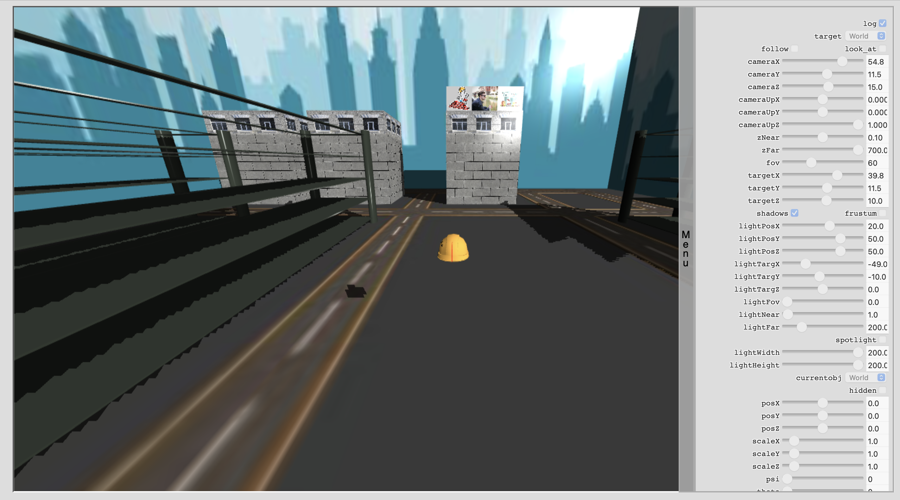
Dal pannello di controllo e' inoltre possibile visualizzare il "frustum" della luce, per poterne controllare la posizione e l'orientamento.
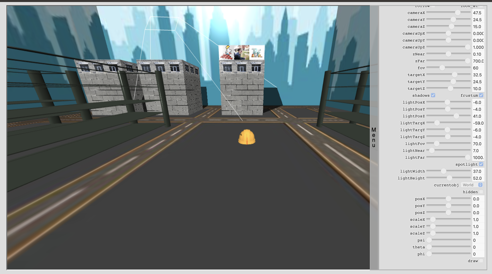
Cliccando inoltre sull'opzione "Spotlight" si può trasformare l'illuminazione. (Si noti il "frustum")

Ombreggiatura
E' possibile attivare l'ombreggiatura, generata grazie al calcolo della profondità dei pixel rispetto alla sorgente luminosa e al resto della scena. Con l'ausilio di due "Sahder Program" in cominazione.
E' stata dunque anche inserita la possibilità di disabilitare/abilitare le ombre dal pannello di controllo (dal menu).
Grazie alle ombre la resa della nostra città in costruzione è decisamente più bella e più realistica. Inoltre,
grazie ai controlli del menu è possibile modificare la posizione delle luce per ottenere vari effetti realistici di illuminazione.
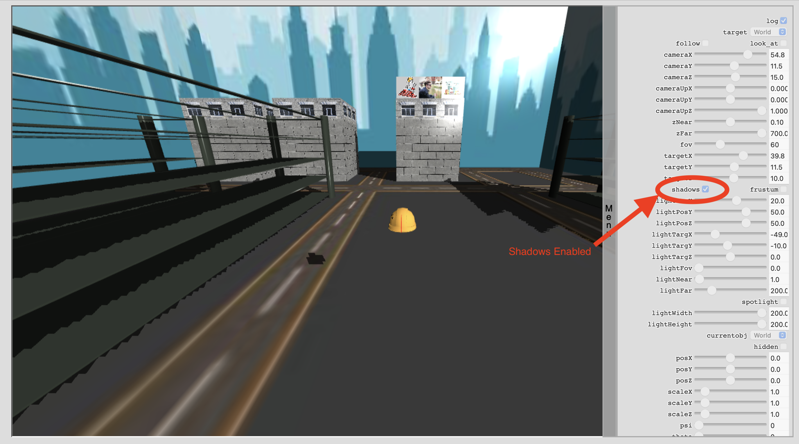
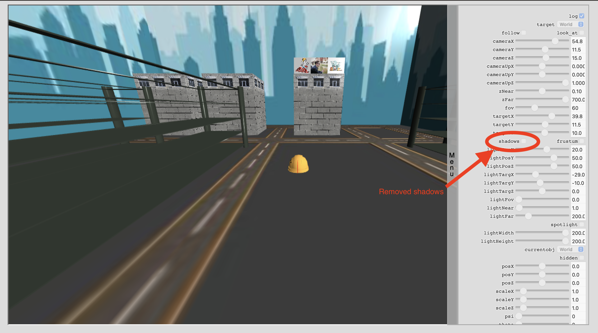
Pannello di Controllo
Il pannello di controllo, realizzato con sfondo semi-trasparente per poter continuare a vedere la scena mentre
si modificano i valori, presenta diversi parametri modificabili:

- La prima opzione è quella di "log" per ottenere i log dell'applicazione nel pannello di controllo del browser
- Il secondo è "target" ovvero l'oggetto target selezionato. E' possibile selezionarlo da un menù a tendina con tutti gli oggetti presenti nella scena
- L'opzione "look_at" permette l'ancoramento del target della telecamera all'oggetto selezionato (target)
- L'opzione "follow" se attivata, oltre ad ancorare il target della camera all'oggetto, quando l'ogetto si muove la camera esegue i sui stessi movimenti
- L'opzione "cameraX" permette di spostare la posizione della camera sull'asse X
- L'opzione "cameraY" permette di spostare la posizione della camera sull'asse Y
- L'opzione "cameraY" permette di spostare la posizione della camera sull'asse Y
- Le opzioni "CameraUp" X, Y e Z permettono di settare il versore "up" della camera
- ZNear e ZFar permetto di impostare la distanza di rendering della camera (Znear e Zfar della camera)
- Lo slider "Fov" permette la modifica del Field of View della camera
- Le tre opzioni "Target" X,Y e Z permettono la modifica delle coordinate del target della telecamera (il punto in cui la camera sta guardando)
- "Shadows" permette l'abilitazione/disabilitazione del rendering delle ombre
- "lightFrustum" permette di visualizzare il frustum della sorgente luminosa
- "LightPos" X, Y, e Z permettono di gestire le coordinate posizione della luce
- "LightTarg" X, Y, Z permettono di settare il target della luce, quindi la sua direzione
- "LightFov" permette di aumentare/diminuire l'ampiezza dell luce quando è in modalità "spotlight"
- "LightNear" modifica la distanza alla quale la sorgente di luce parte rispetto al suo punto di origine
- "LightFar" modifica la distanza massima a cui la sorgente luminosa può illuminare, partendo dal suo punto di origine
- "SpotLight" permette di modificare il tipo di illuminazione: Direzionale(disattivato) o Spotlight(attivato)
- "LightWidth" e "LightHeight" permettono la modifica delle dimensioni della luce in modalità direzionale
- "CurrentObj" è un menu a tendina che permette di scegliere quale oggetto modificare con i parametri successivi
- "Pos" X, Y e Z permettono la modifica delle coordinate dell'oggetto sopra selezionato
- "Scale" X,Y, e Z permettono la scalatura dell'oggetto sui 3 assi
- "Psi", "Theta" e "Phi" permettono la rotazione dell'oggetto sui 3 assi
Utilizzo su dispositivi mobile
Essendo questa un'applicazione web, l'utilizzo su un disposito mobile risulta essere semplificato. L'interazione avviene tramite i tocchi sullo schermo invece che tramite il mouse/tastiera, i quali vengono catturati e gestiti adeguatamente dall'applicazione.
Lo spostamento del nostro oggetto principale (l'elmetto) avviene in modo molto fluido e intuitivo tramite gli eventi touch.
Permettendo all'utente di poter tranquillamente continuare a esplorare la scena divertendosi!
Extra
L'inserimento di oggetti all'interno della scena era stata pensata con l'aggiunta anche di un secondo canvas nella pagina, più piccolo,
che permettesse all'utente di visionare e interagire in modo semplice con gli oggetti in maniera 3D, prima di posizionarli nella scena.
Per ragioni di tempistiche la funzionalità non è stata integrata ma si riporta qui uno screen del prototipo di esempio con la presenza di due canvas.
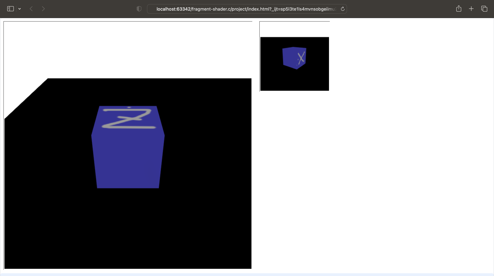
Note
Il progetto nasce grazie alla collaborazione di 4 colleghi, con la realizzazione di una solida base di codice comune
permettendo poi ad ognuno di noi di sviluppare il progetto personale con maggiore precisione. Il codice organizzato e strutturato in Typescript,
permette l'utilizzo di WebGl e degli script JavaScritp con una maggiore tipizzazione. Il modello di programmazione è stato riscritto sulla programazione ad aventi,
dove ogni azione effetuata scatena un evento che è possibile catturare per aggiornare la scena. Ciò permette una maggiore efficienza a livello di utilizzo di risorse e di efficienza del codice.
Si ringrazia dunque Luca De Risi, Luca Marchegiani ed Antonio Franzese per la collaborazione.